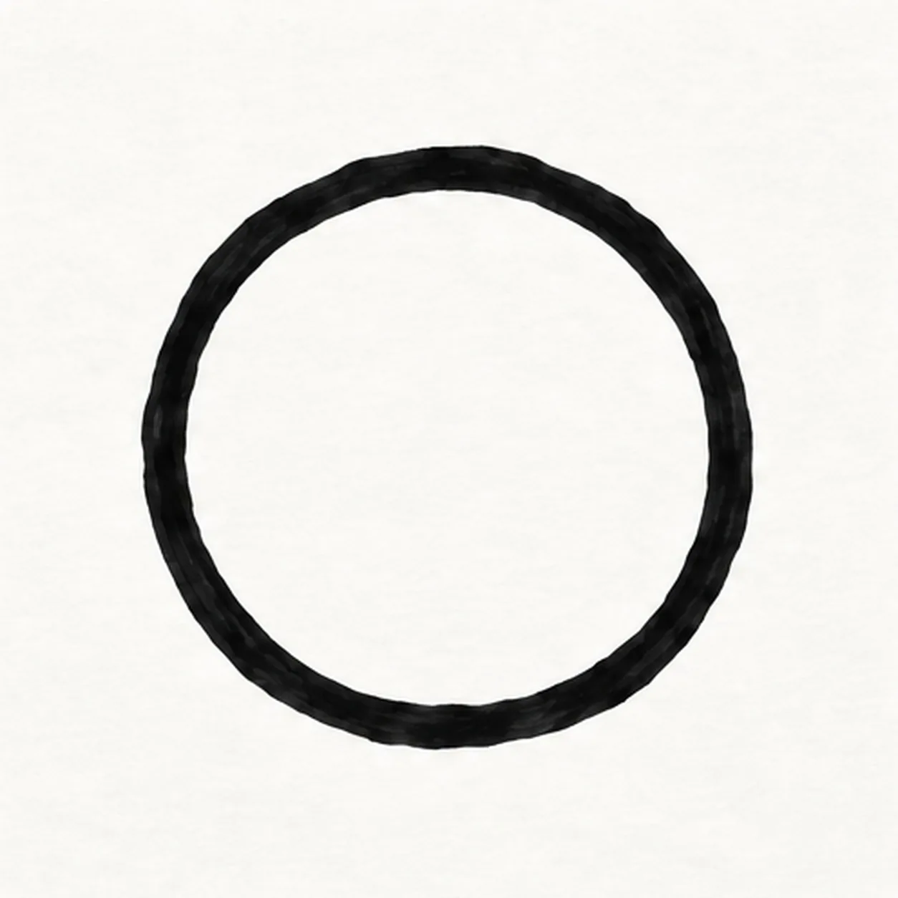
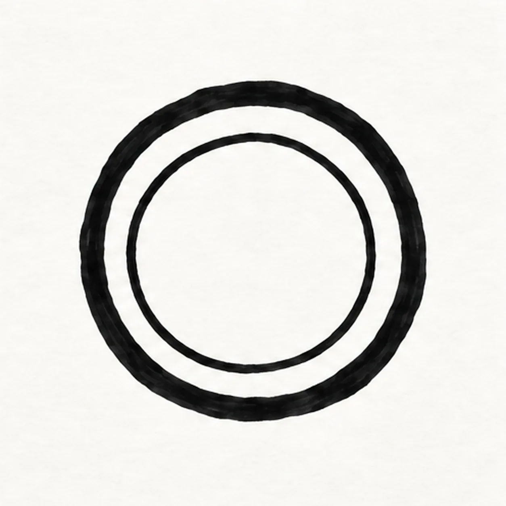
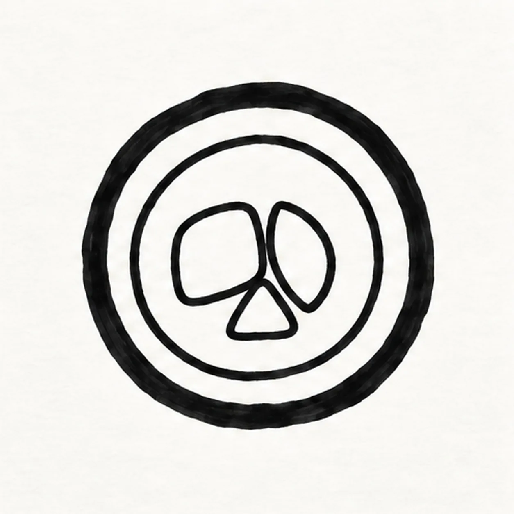
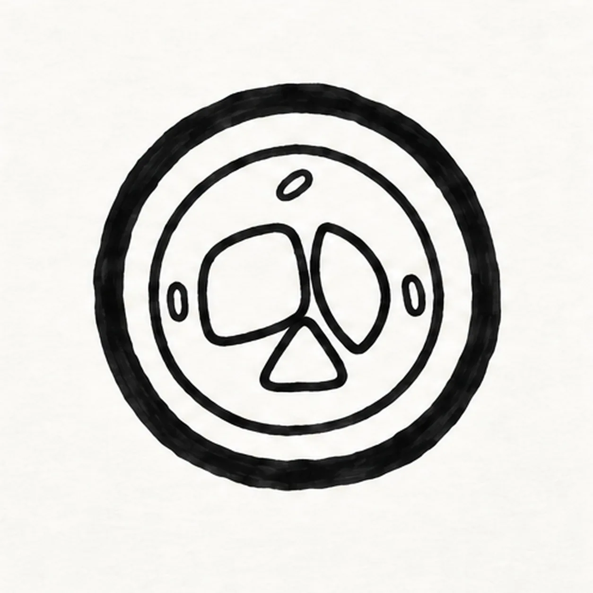
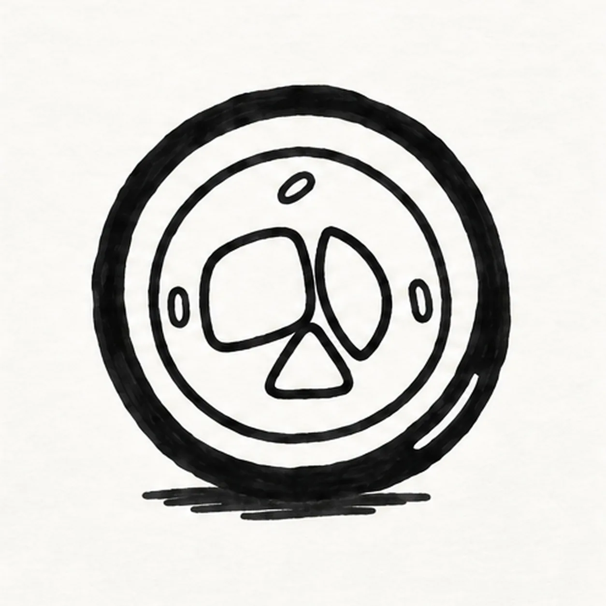

Marker ready?
Let's draw a sushi roll
Treat this as one playful practice round: sketch the idea loosely, simplify the shapes, then commit with confident marker outlines and bright fills.
-
01

Circle the seaweed wrap
With a black felt tip, make one generous circle that is slightly uneven like a hand-rolled sushi piece. Leave the center open for the rice and filling.
Marker tip: Turn the paper as you draw; a slightly uneven circle feels hand rolled, but keep the opening generous.
-
02

Mark the rice ring
Follow the outer circle with a second smaller curve, leaving a fairly even dark seaweed band. Keep a broad white rice ring inside that band and an open center for the filling.
Marker tip: Keep the inner curve round and centered so the seaweed wrap reads as one even dark band.
-
03

Place three fillings
Inside the open middle, draw a rounded salmon block on the left. Tuck a curved cucumber wedge against its right edge and a small carrot triangle directly beneath the two, leaving white rice around all three.
Marker tip: Let the three fillings touch in the middle but keep a cushion of white rice around them.
-
04

Add three rice marks
Put one short rice-grain dash in the left rice band, one near the top, and one on the right. Keep them off the fillings and out of the dark seaweed wrap.
Marker tip: Three marks are enough to explain the rice without making the little roll look speckled.
-
05

Add the glint and shadow
Add one short curved white gel-pen glint on the lower-right seaweed band. Place a small broken black marker shadow under the roll, centered beneath the outer circle, without moving the rice or fillings.
Marker tip: Wait for the black wrap to dry before adding the white glint; keep the shadow short and broken.
-
06

Color the sushi roll
Fill the outer seaweed band deep navy-black, the salmon coral with two pale streaks, the cucumber green with a few light seed marks, and the carrot orange. Leave the rice ring mostly white with light cream marker dashes, and preserve the three black grain marks, white nori glint, and broken shadow.
Marker tip: Fill with strokes that follow each shape; leave open paper showing through the salmon and cucumber.

![Handmade face-free felt-tip marker drawing of exactly two crossed garden gloves with one coral foreground glove leaning left, one teal rear glove leaning right, four rounded fingers and one thumb on each glove, one curved palm reinforcement panel per glove, two golden-yellow cuff bands, exactly three black stitch dashes on the foreground cuff and two visible dashes on the partly covered rear cuff, exactly two open-paper curved highlights, one separate bright-green pointed leaf with a dark branching vein pattern, thick imperfect black outlines, visible marker streaks, and one broken deep-navy ground shadow](assets/cartoon-garden-gloves-with-leaf-finished-v1.webp)
![Handmade face-free felt-tip marker drawing of one pirate spyglass tilted from lower right toward upper left with one coral tapered main barrel, exactly three black diagonal grip stripes, one wide golden-yellow front lens ring, one deep-aqua lens with one large open-paper crescent reflection, exactly two teal telescoping rear tubes, exactly two golden-yellow joint collars, one rounded teal eyepiece, one deep-navy wrist cord attached with one knot and forming one open loop, exactly three golden-yellow four-point sparkle bursts, exactly two open-paper hardware highlights, thick imperfect black outlines, visible marker streaks, and one broken deep-navy shadow made from three loose patches](assets/cartoon-pirate-spyglass-finished-v1.webp)